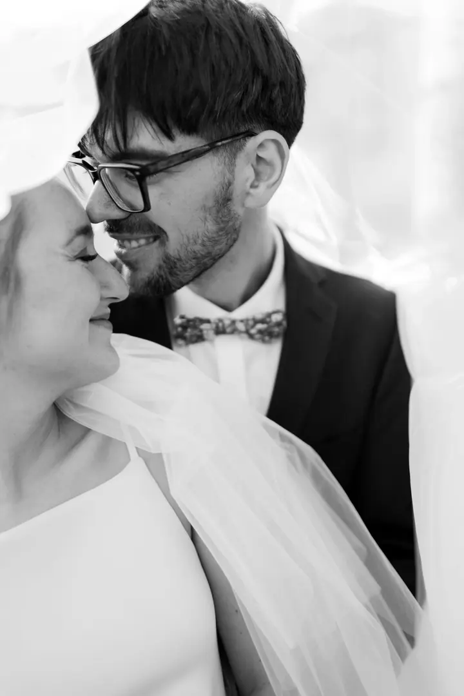
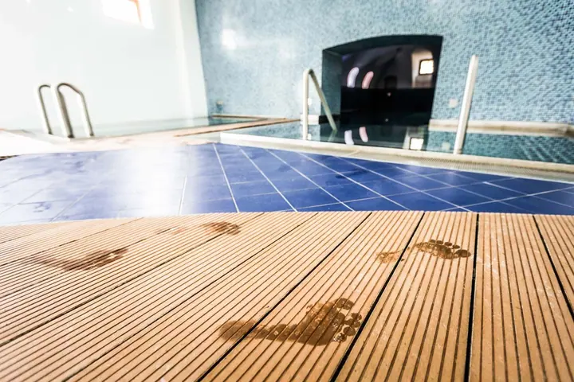
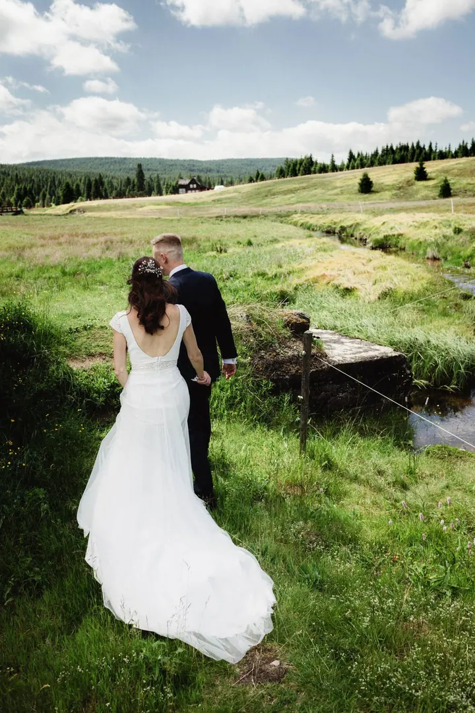
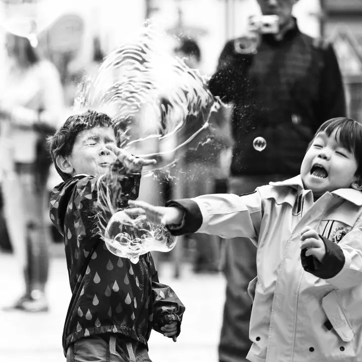

01 / 04
Svatby
Na svatbě nerežíruju víc, než je potřeba. Jsem celý den s vámi a sbírám chvíle, které by jinak zmizely mezi přípitkem, smíchem a trochu nervózním tichem.
Zeptat se na termín→






Chvíle, které se nedají naaranžovat
Zeptat se na termín →(01) Ahoj
Jmenuji se Lukáš Veselý a jsem fotograf z Prahy. Nejvíc fotím svatby , čím dál častěji jsem v ateliéru a kultura je moje srdcovka. Nejradši mám ale chvíle, které se nedají zopakovat ani naaranžovat .
(02) Co fotím
01 / 04
Na svatbě nerežíruju víc, než je potřeba. Jsem celý den s vámi a sbírám chvíle, které by jinak zmizely mezi přípitkem, smíchem a trochu nervózním tichem.
Zeptat se na termín→02 / 04
Koncerty, festivaly a reportáže jsou moje srdcovka. Fotím opravdové momenty tak, jak se dějí, bez zbytečného stylizování, ale s citem.
Zeptat se na termín→03 / 04
Ve svém ateliéru v Praze fotím portréty, páry i rodiny, klidně i něco odvážnějšího. Focení můžete darovat i jako dárkový poukaz.
Zeptat se na termín→Dále nabízím
Fotím byty, domy a interiéry tak, aby fotky nejen dobře vypadaly, ale taky jasně mluvily a pomáhaly prodávat.
↗(03) Portfolio
Kliknutím fotku zvětšíte · fotografie jsou ilustrační
(04) Postup
Od první zprávy po hotovou galerii.
Krok 1 z 4
Nejdřív si řekneme, co ode mě chcete, kde a kdy se fotí. U svateb vám rovnou pošlu ceník, u ostatních focení nastavím cenu férově podle rozsahu práce.
Krok 2 z 4
U svatby si vyberete krátký balíček, celodenní Klasiku, nebo se domluvíme na míru. Probereme harmonogram i místa, kde budeme fotit.
Krok 3 z 4
Nejsem jen ten, kdo drží foťák. Jsem celý den s vámi, pomůžu, když je potřeba, a starám se o to, aby focení bylo příjemné a nenucené.
Krok 4 z 4
Fotky pečlivě vyberu a upravím. Dostanete je v online galerii, kterou můžete sdílet s hosty.

Krása svatby je v drobných momentech, ne v dokonalosti.
(05) Za objektivem
Na začátku to byla zvědavost, dneska je to moje práce a velká vášeň. Fotím svatby, koncerty, festivaly i reportáže a na každé z nich hledám totéž: opravdové momenty tak, jak se dějí, bez zbytečného stylizování, ale s citem.
Mám rád fotky, ke kterým se člověk vrátí i po letech a hned si vybaví, jaké to tehdy bylo. Nejen co se dělo, ale i jaké to mělo světlo, náladu a tempo. Často si představuju život jako filmový pás, kde běží desítky políček za sekundu, a některá z nich si fotoaparátem „půjčuji“, abych je mohl předat dál.
U produktových, firemních a interiérových fotek mi jde o funkčnost, aby obrázky něco vyprávěly nebo něčemu sloužily. Jsem z Prahy, ale na zajímavou lokaci jedu kamkoliv.
Lukáš
Lukáš Veselý · Svatební a reportážní fotograf
Krátký balíček za 15 000 Kč zahrnuje až 5 hodin na svatbě, obřad a párové focení a minimálně 150 upravených fotografií s online galerií. Klasika za 25 000 Kč pokryje až 10 hodin od příprav po první tanec a minimálně 400 pečlivě upravených fotek. Potřebujete něco jiného? Domluvíme se na míru.
Neschovávám se za předpřipravené balíčky. Do ceny nejčastěji vstupuje, kolik času spolu strávíme, co přesně se fotí, kde se fotí a kolik práce bude po focení s výběrem, úpravami a případně tiskem.
Ano. Jsem z Prahy, ale na zajímavou lokaci jedu kamkoliv. Pokud je potřeba cestování nebo speciální logistika, promítne se to do ceny.
Ano, nabízím dárkový poukaz na 2 hodiny focení v mém ateliéru v Praze. Může to být portrét, párové focení, rodina nebo klidně něco odvážnějšího. Posílám minimálně 30 upravených fotek a když budete chtít, pomůžu i s tiskem.
(07) Kontakt
Napište pár vět o tom, co si představujete, a termín, který se vám hodí.